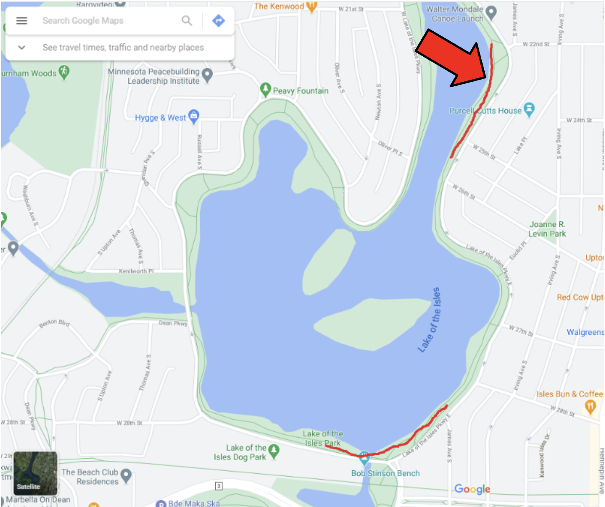

Deep Learning Models for Measuring Mask-Wearing Behavior in Public Spaces
Acknowledgements
I would like to acknowledge and express my gratitude to my capstone advisor, Dr. Julian Wolfson, for his guidance and patience throughout the entirety of this project. His expertise and insight were invaluable in shaping the direction of this research.
I would also like to give a special thanks to my wife, Aminah Qandeel, for her unwavering support throughout the last two years. I couldn’t have accomplished this without her!
Abstract
This project explores the feasibility of off-the-shelf deep learning models on a novel trail dataset. This dataset was curated by installing cameras at multiple locations adjacent to trails at several lakes in Minneapolis. The results of this project show the successful usage of off-the-shelf models for face detection, mask detection, and people tracking.
Introduction
Advances in deep learning have brought the technology to a point of maturity where many pre-trained models now exist for common tasks, such as object detection. As a result, smaller companies and industries that may have previously lacked the resources to invest in a machine learning department now can leverage this technology for their benefit. To explore this further, this project examines the performance of multiple off-the-shelf models on a novel dataset.
Throughout this paper, the novel dataset explored in this project will be referred to as the “novel trail dataset.” This dataset was curated by installing ZED cameras at multiple locations adjacent to trails at several lakes in Minneapolis. These lakes encompass Lake of the Isles, Bde Maka Ska, and Lake Harriet. In total, 31 hours of footage in favorable weather was recorded, and 3 minutes, or 837 frames, of that footage was manually labeled to assess the performance of a mask detector.
Four off-the-shelf deep learning models were tested on this dataset. One model for face detection, two for mask detection, and one for people tracking. The two mask detection models were able to be compared against each other since ground truth values were available for a subset of the data; sensitivity, specificity, precision, and accuracy were used as metrics to assess model performance. The other two models, face detection and people tracking were assessed qualitatively.
The results of this work demonstrate the successful usage of off-the-shelf deep learning models for face detection, mask detection, and people tracking in a never-before-seen park setting.
Methods
Research Design
The original research goal of this project, which began two years ago, was to test the efficacy of 2D/3D image-based sensors to quantify COVID compliance behaviors, namely movement behavior and exposure risk among public trail users. This involved quantifying physical distancing and mask-wearing behaviors.
Data Collection
ZED cameras were installed at multiple locations adjacent to trails at Lake of the Isles, Bde Maka Ska, and Lake Harriet. These locations were selected to be near amenities such as beaches, food/entertainment, and parks. MPRB permits were issued through the summer of 2021, and 31 hours of footage in favorable weather conditions were recorded. This footage was recorded on May 26, June 14, and June 18, 2021.
The location of data collection sites are shown in Figure 4, examples of these sites are shown in Figure 5, and the camera installation locations are shown in Figure 6.
In order to assess the performance of a mask classifier, a subset of footage needs to be labeled. Having access to the ground-truth values allows classifier metrics to be calculated as well as opening up the possibility of fine-tuning. Manual labeling was employed to achieve ground-truth labeling, and faces in 977 frames were labeled with their corresponding mask-wearing status. Of these 977 frames, 530 held the label “No Mask”, and 447 “Mask.” Because the rate of mask-wearing by trail users was low, research staff conducted walk-bys while wearing masks to increase the amount of mask-wearing footage.
Machine Learning
Face Detection
Determining whether a person is wearing a face mask is dependent on being able to detect their face. Two mask detectors are evaluated in this work, and both utilize face detectors that are similar to a model called RetinaFace. The sections below briefly introduce facial detection frameworks explored in this project.
DeepFace and RetinaFace
DeepFace is an off-the-shelf facial recognition framework for python. This library includes access to state-of-the-art models such as VGG-Face, Google FaceNet, OpenFace, Facebook DeepFace, DeepID, ArcFace, Dlib, and SFace. RetinaFace is an off-the-shelf face detection package that utilizes a Resnet50 backbone. Resnet50 is a convolutional neural network-based model that consists of 48 convolution layers (Mascarenhas and Agarwal 2021). Furthermore, the ResNet architecture allowed deep neural networks to mitigate greater training error percentages by introducing the addition of shortcut connections and residual functions (Mascarenhas and Agarwal 2021).
Mask Detection
Xception
Xception is convolutional neural network architecture based entirely on depthwise separable convolution layers (Chollet 2017). A mask detection model was created by training and fine-tuning the Xception architecture on a mask-wearing dataset. This work was completed in Helena Sheild’s Masters thesis: “Masked Faces in Context (MASON) for Masked Face Detection and Classification.” For the remainder of this paper, the fine-tuned Xception model will be referred to as “Xception”, for simplicity.
This model was fine-tuned on a new dataset consisting of real-world images collected from image search sites. The goal of this model was to predict mask-wearing behavior. However, this model was not fine-tuned on the images collected from the novel trail dataset explored in this project, so it acted as a pure off-the-shelf model.
The Xception mask classifier architecture works as follows:
- Apply the RetinaNet face detection model to generate face crops.
- Feed cropped face to Xception model for mask classification.
- Final output is the face detected by RetinaFace along with the mask prediction.
This architecture uses a pre-trained face detection model called RetinaNet, which was chosen due to its superior performance against other algorithms such as MT-CNN, Haar Cascade, and HOG. RetinaNet achieved higher recall and precision than the aforementioned algorithms.
The Xception model is used in the mask detection portion of this architecture. Additionally, transfer learning was employed to use the existing model weights of the Xception model, and additional learning was completed iteratively to finetune against the newly gathered training set.
Prior to testing on the novel trail dataset, this classifier was evaluated based on the F1 score metric and the Loss. It was demonstrated to achieve an F1-score of 0.99, and a loss of 0.0182. These metrics were evaluated on the dataset it was trained on.
AIZOO
The AIZOOtech group provides an off-the-shelf mask detection package which utilizes the structure of SSD (Single Shot MultiBox Detector). SSD is a method for detecting objects in images using a single deep neural network (Liu et al. 2016).
This architecture was chosen from several pre-trained models and was evaluated against the novel trail dataset and the previously introduced Xception model. This architecture is a pure off-the-shelf solution and was shown to have promise when confronted with unseen real-world data. The model tested is a FaceMask detection model developed by a group called AIZOOtech. This model was trained on 7971 images composed of WIDER FACE and MAFA. WIDER FACE is a face detection benchmark dataset that contains images from the publicly available WIDER dataset. This dataset contains images with a high degree of variability in scale, pose, and occlusion. Furthermore, this variability can help deter the model from overfitting during training. AIZOO provides API access to their model via PyTorch, TensorFlow, Keras, MXNet, Caffee, Paddle, and OpenCV dnn. The PyTorch framework was used for this analysis.
Metric Evaluation
Standard metrics were used to evaluate the models introduced above. Precision and accuracy were chosen since they are very common metrics used across the fields of computer science and machine learning. In addition, we also chose to use sensitivity and specificity. All four metrics were assessed across models and sub-groups, but the focal point was sensitivity and specificity.
People Tracking
Trackformer
The task of multi-object tracking (MOT) presents a challenge that requires simultaneous reasoning about track initialization, identity, and spatiotemporal trajectories. In a paper titled “TrackFormer: Multi-Object Tracking with Transformers”, the authors introduce an end-to-end trainable MOT approach called TrackFormer. TrackFormer is based on an encoder-decoder Transformer architecture and was shown to achieve state-of-the-art performance on MOT17 and MOTS20 without relying on any additional graph optimization, or modeling of motion and/or appearance (Meinhardt et al. 2022).
The network uses a CNN (ResNet-50) to identify features in the frame that get passed through the Transformer Encoder and Decoder to identify objects to track. When objects are identified, track queries are initiated that get passed onto the next frame in the sequence. The track queries from previous frames are passed to the Transformer Decoder to inform target recognition and maintain a memory of the objects in the scene to track them over time.
The primary data set used to train and evaluate the original model was MOT17 along with further investigation using MOT20 and MOTS20. The data includes video clips of multiple humans moving throughout the frame in different environments with varying levels of complexity and crowdedness.
Results
This section covers the results of the different models. The mask detection models were applied to the labeled frames and the predicted results were compared to the labels.
Face Detection
DeepFace
The Xception architecture typically only picks up one face in each frame. However, the DeepFace model, using the retinaface backend, successfully finds multiple faces. An example of this can be seen in Figure 7.
RetinaFace
The retinaface backend proved successful when testing the DeepFace framework. Retinaface also provides the capability to extract facial landmarks, such as the eyes, nose, and mouth corners. One hypothesis was to use the facial landmarks, or lack-there-of, to infer whether or not a mask is being worn. However, as can be seen in Figure 8 (c), the RetinaFace algorithm attempts to find facial landmark points regardless of mask-wearing behavior.
Moreover, successful facial landmark detection opens up additional avenues of analysis such as head pose, gaze direction, and facial expression estimation.
Mask Detection
Xception
The Xception model was evaluated against standard metrics. The results can be seen in Table 1 and plots can be found in Figure 1 (a).
| Metric | Score | Lower | Upper |
|---|---|---|---|
| Sensitivity | 0.799 | 0.761 | 0.840 |
| Specificity | 0.430 | 0.392 | 0.468 |
| Precision | 0.542 | 0.509 | 0.586 |
| Accuracy | 0.599 | 0.565 | 0.623 |

The lower bound and upper bounds of the metrics were calculated by bootstrapping a 95% confidence interval. Bootstrap methods, in general, consist of estimating a characteristic of the unknown population by simulating the characteristic when the true population is replaced by an estimated one (see Diciccio and Romano 1988). The 95th percentile method was used to calculate a set of approximate confidence limits for the metrics defined above.
The metric results for the full dataset provided some insights into the limitations of the trained model. A noteworthy limitation is a specificity equal to 0.4 and a sensitivity equal to 0.8. The relatively high sensitivity paired with a low specificity shows that this model overpredicts mask-wearing. Additional sub-groups were analyzed to see if the model performed better in different scenarios.
Sub-group Metric Evaluations
See Figure 9 for metrics calculated across frame quadrants. The first and third quadrants represent the upper-left and upper-right quadrants of each frame, respectively. Quadrants 2 and 4 represent the bottom two quadrants of each frame, and in most cases are images of the ground. In this analysis, all faces were found in quadrants 1 and 3. Both quadrant 1 and quadrant 3 have poor specificity, with quadrant 3 having very poor specificity compared to the entire dataset. Both of these quadrants have high sensitivity also, which indicates overprediction independent of the quadrant.
Metrics were also calculated across a combination of quadrants and dates. The hypothesis was that since both the quadrants and dates yielded similar results, the combination will yield overprediction as well. Each sub-group was shown to have high sensitivity and low specificity, which aligned with the overprediction hypothesis.
Image Examples
Quadrant 1 image examples can be seen in Figure 10, and quadrant 3 image examples can be seen in Figure 11.
AIZOO
The AIZOO model was ran on the trail dataset and metrics were calculated. This model was ran through the PyTorch interface, and was able to achieve a precision of 0.96. See Figure 2 for full results.
| Metric | Score | Lower | Upper |
|---|---|---|---|
| Sensitivity | 0.520 | 0.478 | 0.574 |
| Specificity | 0.980 | 0.964 | 0.993 |
| Precision | 0.968 | 0.933 | 0.986 |
| Accuracy | 0.739 | 0.712 | 0.770 |
The AIZOO model was able to achieve a specificity of 0.98. This means that the model is very unlikely to generate false positives, meaning that mask predictions are more reliable and can be trusted.
Xception vs AIZOO
The performance of the Xception model and the AIZOO model were compared. See Figure 3 for full results.
AIZOO had lower sensitivity but higher specificity, leading to substantially higher precision. This was consistent across all datasets and showed that the AIZOO model provides more reliable mask predictions than the Xception model. The accuracy for the AIZOO model is 0.73, which isn’t optimal. However, the high precision score is a great starting ground for further fine-tuning the model.
People Tracking
Trackformer
TrackFormer was able to successfully track people across multiple frames by utlizing an encoder-decoder transformer architecture. See Figure 13 for an example of the model tracking people, and a dog, throughout frames.
Limitations
Unrepresentative Dataset for Mask Wearing
The lack of mask-wearing footage led to an unrepresentative dataset for mask-wearing. MPRB permits were received after mask mandates were lifted, requiring the team to heavily rely on UMN actors for mask-wearing footage. After mask mandates were lifted in Minnesota it was uncommon to see someone wearing a mask outdoors. This led the research team to plant mask-wearers on the trails to capture footage. Analyzing the footage made it clear that the actors did not imitate a traditional trail goer; instead of traversing the trail linearly: out of the frame from afar, towards the camera, and out of the frame again, the actors paced around and sat in front of the camera. Furthermore, the number of mask-wearing actors was very small, leading to a disproportionate amount of frames containing actors. This led to an unrepresentative dataset for mask-wearing, which made it difficult to assess how well the mask detectors would perform on this type of dataset.
Difficult to Employ Transfer Learning
The limited number of labeled images made it difficult to employ transfer learning. Transfer learning involves taking a model with pre-trained weights, and applying additional rounds of training with a new dataset. This is commonly referred to as “fine-tuning”, and can help with the performance of a model. Out of 31 hours of footage, 977 frames (about 3 minutes) were labeled. Furthermore, out of these 977 frames, 447 had a positive mask label. The majority of these frames contained one mask-wearing actor, and fine-tuning could have led to an overfit model.
High Proportion of Low-Confidence Mask Predictions
The high proportion of small faces, relative to the frame, led to a high proportion of faces not yielding adequate confidence to enable a mask prediction. The camera’s positioning was angled in a way that captured more footage of people further away from the camera than close to it. Analyzing the prediction results, it was determined that faces closer to the camera (relatively bigger, higher resolution) yielded higher confidence predictions. One way to address this limitation is to find a camera position that captures more up-close footage. Another way to expand this study, which doesn’t require redesigning the experiment, is to include tracking, which could potentially improve the accuracy of predictions. Tracking people throughout frames would allow the higher confidence predictions to play a bigger role in determining the mask-wearing status of each person.
Conclusion
Off-the-shelf deep learning models were successfully used for face detection, mask detection, and people tracking on a novel trail dataset. These models included RetinaFace for face detection, Xception and AIZOO-based models for mask detection, and Trackformer for people tracking. Limitations such as a lack of labeled images and substandard camera positioning were highlighted, and ways to mitigate these limitations were discussed.
References
Appendix
